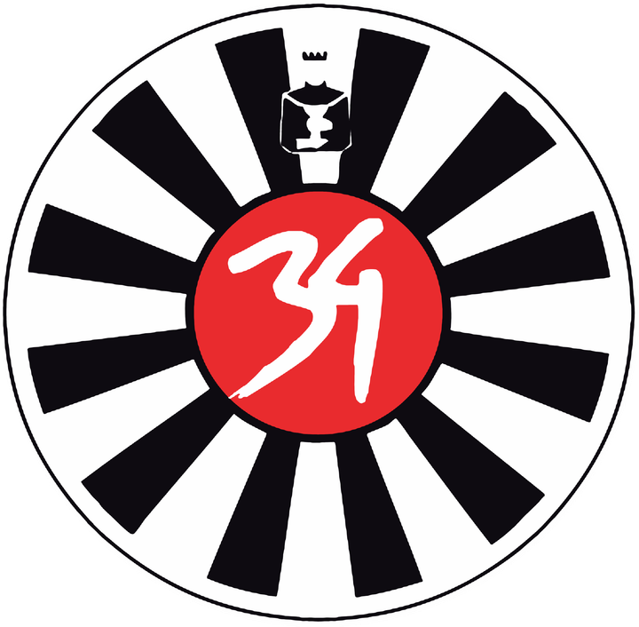

Skimeeting 2027

Skimeeting 2027
Pause
Round Table 34 Grieskirchen
Skimeeting
2027
Saalbach Hinterglemm · 4.–6. März 2027
Los geht's
mit Ton · ca. 5 Minuten
ohne Ton ansehen
Tippen: weiter · links tippen: zurück · gedrückt halten: Pause
Skimeeting 2027 · Saalbach
Du bist
dabei!
Gleich geht's in die Skimeeting-Community …
Zur Community